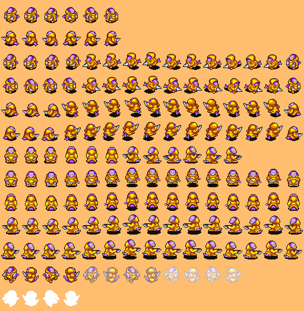
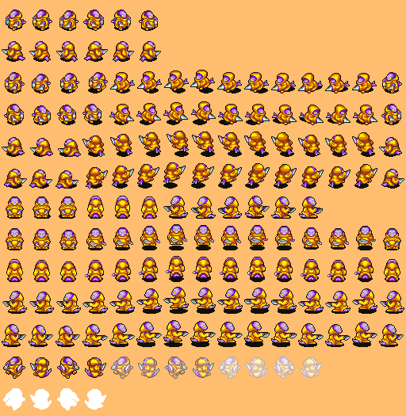

Nadine Gutiérrez Pociño
-
Role: Artist / Audio
-
Age: 19 y.o.
-
From: Sant Vicenç de Castellet
-
Github: Nadine044
My work
As the artist of the team I have been commissioned to create new artistic content based on sprites already created belonging to Final Fantasy Tactics
Advance (GBA, 2003). I also chose the soundtrack that we would use and the sfx, also belonging to the original game.
In the design phase of the game (GDD development) we decided to make a game with a dynamic which offers the player to move in eight directions during
the quests levels. This led me to accept the decision to create four other directions for each character and enemy, because the original game only
offered four of them. This is what took me most of the time during the development of the project.
I participated actively in the other subjects offered by the degree, the manager, who had some time to help some member of the team, helped me to
finish the enemies that were missing so that I could dedicate myself to other small artistic tasks that did not need so much time and I could do a lot
of them and faster.
It was good for me to start doing various art, I felt more involved in the project because I was not only the person who creates the enemies, I also
fulfilled some request of some team member when they needed some basic sprites, such as a treasure chest or a portal. I also had more freedom to touch
up any sprite improvised by other team member, then I would take a look and re-do it.
Here we can see the different characters and enemies with their diagonals (original sprites) and with their frontal, lateral and back views (created by me).
 
I personally enjoied making this enemy. I like the original design.
This is the final boss of the second quest. It took me more time than the other enemies because of his different attack phases.

I personally enjoied making this enemy. I like the original design.
This is the final boss of the second quest. It took me more time than the other enemies because of his different attack phases.
 During the design phase I also proposed to have a good narrative that supported the game, so I offered to design it according to the quests system we had
talked about. What I offered was a story based on the basis of the "Hero's Journey" model. At first everyone liked it and we decided to push it forward,
but as the project progressed details appeared that some members did not like, so we decided to change it a bit and omit
some details. Even so, it still maintains the initial structure.
Finally I made the introductory video to the game, where the player is shown the main objective that he has, which is to rescue his friend. Besides being
an introduction to the game, it is an introduction to the narrative so that the player does not feel lost from the first minute he starts playing.
During the design phase I also proposed to have a good narrative that supported the game, so I offered to design it according to the quests system we had
talked about. What I offered was a story based on the basis of the "Hero's Journey" model. At first everyone liked it and we decided to push it forward,
but as the project progressed details appeared that some members did not like, so we decided to change it a bit and omit
some details. Even so, it still maintains the initial structure.
Finally I made the introductory video to the game, where the player is shown the main objective that he has, which is to rescue his friend. Besides being
an introduction to the game, it is an introduction to the narrative so that the player does not feel lost from the first minute he starts playing.